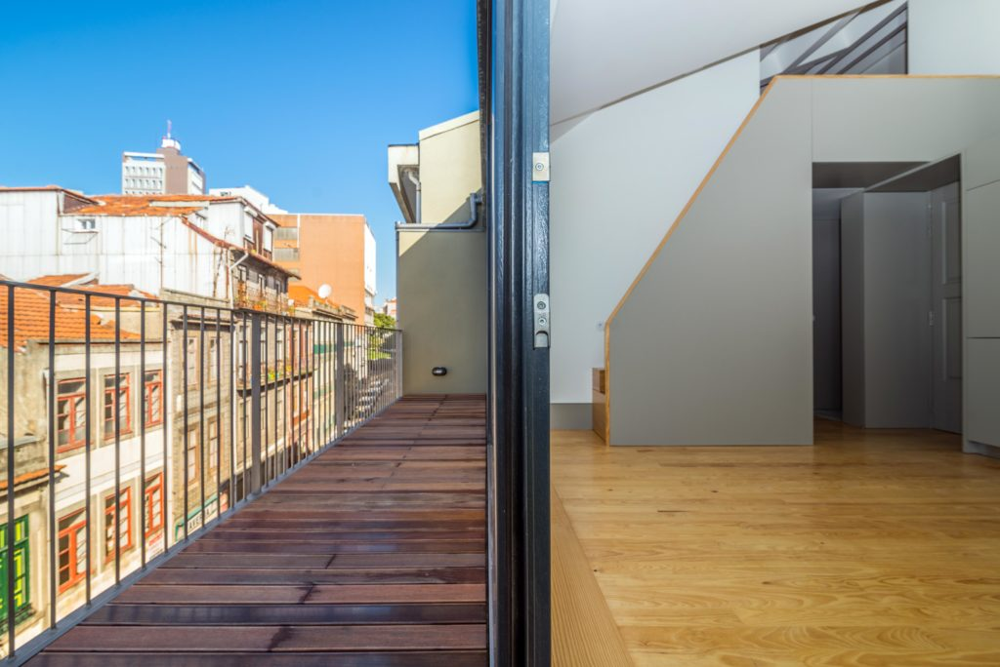

01 · AMCA
Caixilharia em madeira
Janelas e elementos em madeira para integrar na arquitetura.
Para começarmos a conversar
O que pretende substituir ou instalar? Indique o número de vãos e junte uma fotografia do espaço.
Falar sobre este projetoO que pretende substituir ou instalar? Indique o número de vãos e junte uma fotografia do espaço.